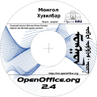

OpenOffice.org 2 - Бүтээгдэхүүний тухайVersion 2 - die neue Office-Suite von OpenOffice.orgОпенОфис.орг 2 энэ албан програмын маш сайжруулсан. ОпенОфис.орг 2 нь
Лиценз үргэлж хуучинаараа байгаа: Та ОпенОфис.орг-н 2 хувилбарыг лицензийн ямар ч төлбөргүйгээр татан авч хувийн, сурах эсвэл бизнесийн зорилгоор чөлөөтэй хэрэглэхээс гадна найз нөхөд, гэр бүлийнхэн, ангийнхан болон ажилчиддаа дамжуулан өгч болно. ОпенОфис.орг юугаараа алдартай гэж?Нэрэндээ дурьдсанаар дэлхийн хамгийн том нээлттэй эх бүхий албан бичгийн багц програм:
ОпенОфис.орг бол Чанар гэдэгтэй ижил утгатай:
ОпенОфис.орг хэрэглэхэд хялбар:
ОпенОфис.орг-той юу дагалдах вэ?БИЧЭЭЧ (WRITER) нь ОпенОфис.орг-н бичвэр боловсруулагч програм: Та хялбархан захианаас авхуулаад төвөгтэй вэб холбоос, товьёог, зураг, лавлагаа агуулсан ном хүртэл янз бүрийн бичих шаардлагатай зүйлдээ ашиглах боломжтой. Автомат гүйцээлт, автомат хэлбэржүүлэлт, автомат засалт, зөв бичгийн дүрмийн алдаа шалгагч зэрэг нь төвөгтэй даалгавар гүйцэтгэж байхад тань туслана. БИЧЭЭЧ нь янз бүрийн хэвлэлтийн ажил жишээлбэл товхимол, олон баганатай мэдээ мэдээлэл зэрэгийг гүйцэтгэх чадвартай. ТООЦООЛОГЧ (CALC) нь танд тоон боловсруулалт хийхэд тань тусална. ТООЦООЛОГЧ таны өгөгдлийг шинжилж, нэмж дүрслэн үзүүлж чадна. Тоон өгөгдлөөсөө диаграмм болон хэрэгсэл үүсгэн үнэлэх боломж олгоно. Бүрэн холбосон туслах систем танд төвөгтэй томьёонуудыг хялбархан оруулахад тусална. Өгөгдлийн залуурчийн тусламжтайгаар гадаад өгөгдлийг оруулж ирэн завсрын үр дүнг гаргах болон статистик анализ хийх боломжтой. Та диаграмм үүсгэхдээ шугаман, дугуй, дөрвөлжин, сүлжээ болон XY төрлийн янз бүрийн диаграмуудыг 2D, 3D график хэлбэрээр өөрт нийцүүлэн сонгох боломжтой. ҮЗҮҮЛЭГЧ (IMPRESS)Чанартай мультимедиа үзүүлэн үүсгэх хамгийн хурдан бөгөөд хялбар зам. Гайхалтай хөдөлгөөнүүд, сонирхолтой эфектүүдийг танд санал болгоно. ЗУРААЧ (DRAW) диаграммаас эхлээд тусгай эфекттэй динамик 3D дүрслэл гэх мэт бүх дүрслэлийг үүсгэж чадна. ӨГӨГДЛИЙН САНЧ (BASE) цоо шинэ өгөгдлийн сангийн модул. ӨГӨГДЛИЙН САНЧаар та өгөгдлийн сангаа ОпенОфис.орг-той холбох боломжтой. Та үүгээр өөрийн өгөгдлийн санд (MySQL, PostgreSQL эсвэл Microsoft Access) эсвэл ӨГӨГДЛИЙН САНЧ-д хэдийнэ холбогдсон HSQL өгөгдлийн санд хүснэгт, маягт, асуулга болон тайлан үүсгэх өөрчлөх боломжтой. Илүү мэдэхийг хүсвэл та зүгээр л татаж аваад туршиж үзнэ үү! |